Applied machine learning on a real Kaggle competition, from raw data to a new submission. Six notebooks, one per unit, take my first entry (balanced accuracy 0.960) through leakage-safe pre-processing, engineered features, every classifier in the syllabus, regression, ensembles and clustering, to a model that scores 0.9713 on Kaggle's hidden labels.
Deployment and conclusionSite, Kaggle, what I learned
Every figure and number in this report comes from executing the notebooks and the training script on the real data; the Kaggle scores are the ones Kaggle reported for my two submissions. Code extracts are copied from the source files with their file names and line numbers.
Course and scope
The project follows the CSE274 syllabus as published unit by unit on the university notes site: Data Pre-processing; Feature Engineering and Dimensionality Reduction; Linear and Probabilistic Classification Models; Regression; Ensemble Learning; Unsupervised Learning. Each unit has one notebook, and chapter 09 maps all 50 listed topics to the section that covers them. The course page gives a course description rather than numbered outcomes, and chapter 09 maps each statement of that description too. The course's continuous assessment puts two thirds of its weight on a project that should "implement all the topics in a practical way"; this is that project.
01 · Project overview
From my first submission to a model that beats it
In April 2026 I entered Kaggle's Playground Series S6E4, Predicting Irrigation Need. My notebook one-hot encoded the features, trained an XGBoost classifier with 200 trees and predicted the most probable class. It scored a balanced accuracy of 0.96021 on the public leaderboard and 0.96077 on the private one, finishing 3,391st of 4,315. This project starts from that notebook and asks what each unit of the course would have changed.
0.9713new Kaggle private score (was 0.9608)
6notebooks, one per syllabus unit
50syllabus topics mapped
2real Kaggle datasets
The data
Item
Value
Main dataset
Kaggle Playground Series S6E4: 630,000 labelled fields, 270,000 test fields; 11 numeric and 8 categorical features
Target and metric
Irrigation need (Low 58.7%, Medium 37.9%, High 3.3%), scored on balanced accuracy, the mean of per-class recall
Regression dataset
Kaggle Crop Yield Prediction Dataset (FAO and World Bank figures): 13,130 country–crop–year rows, 101 countries, 10 crops, 1990–2013
On the public leaderboard, the final 0.96985 would rank about 1,185th of 4,316 (the top 28%), where my April score would rank about 2,659th. The cross-validation predicted the improvement and was slightly cautious: +0.0086 on a held-out fold, against +0.0105 on Kaggle's private labels.
Where the improvement came from
Matching the decision to the metric (Unit I, class imbalance). Plain argmax maximises accuracy. Balanced accuracy weighs the 3.3% High class as much as Low, so per-class decision weights, tuned on out-of-fold predictions, take the final blend from 0.9622 to 0.9703 on a held-out fold.
Features and stronger models (Units II and V) together added much less: engineered features as leak-free transformers, plus LightGBM, XGBoost and CatBoost with early stopping and soft voting, moved the argmax score only from 0.9617 to 0.9624. They matter more once the weights are tuned: the same weight tuning applied to my April model's own predictions reaches 0.9689 on the held-out fold, and with the better models 0.9703.
02 · How it's built
A package, six notebooks, one training script
Every model in the project is a scikit-learn Pipeline built from the same small package, so pre-processing is refitted inside every cross-validation fold and nothing can leak. The full-scale training lives in a script, not a notebook, so it can be rerun with one command.
Files
File
Job
Lines
src/irrigate/features.py
DomainFeatures, GroupStats, FrequencyEncoder: all fit/transform, so statistics come from the training fold only
76
src/irrigate/preprocess.py
the column transformer (one-hot, ordinal growth stage, scaling) and the pipelines used everywhere
37
src/irrigate/decision.py
per-class decision weights that maximise balanced accuracy
37
src/irrigate/evaluate.py
metric table, per-class report, confusion matrix, ROC and PR curves
63
src/irrigate/submit.py
full-data training, blending, weight tuning and checking, the Kaggle file, and a re-scoring of the April approach
177
src/irrigate/data.py
loading the competition data and the crop-yield data
96
tests/test_irrigate.py
leakage-safety of the transformers, pipelines end to end, the weight search
66
02 · How it's built (continued)
The notebooks on the website
Each notebook is published with its code, outputs and figures, exactly as executed. These are screenshots of the site.
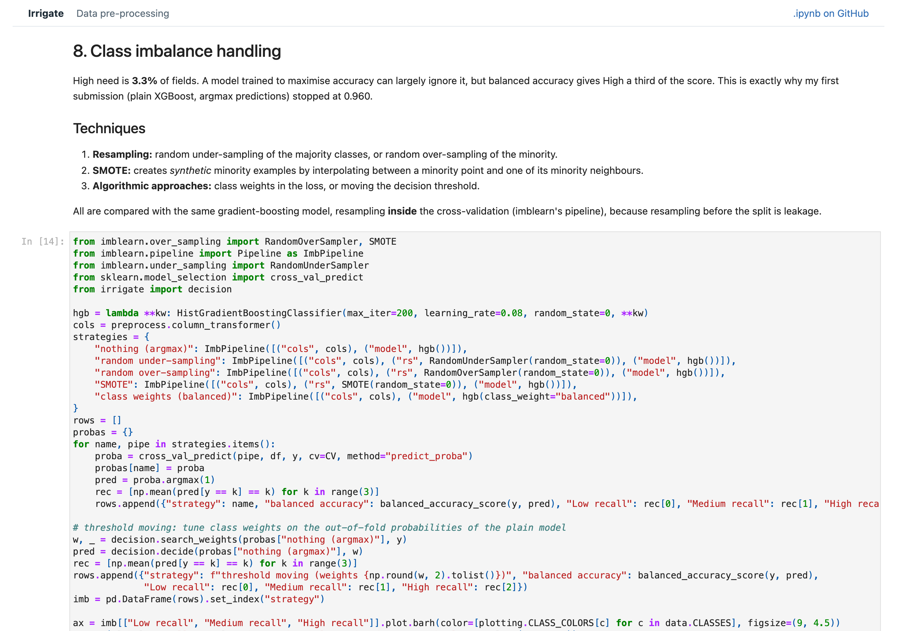
Fig. 1 · Notebook 01, class imbalance: five strategies compared inside cross-validation.
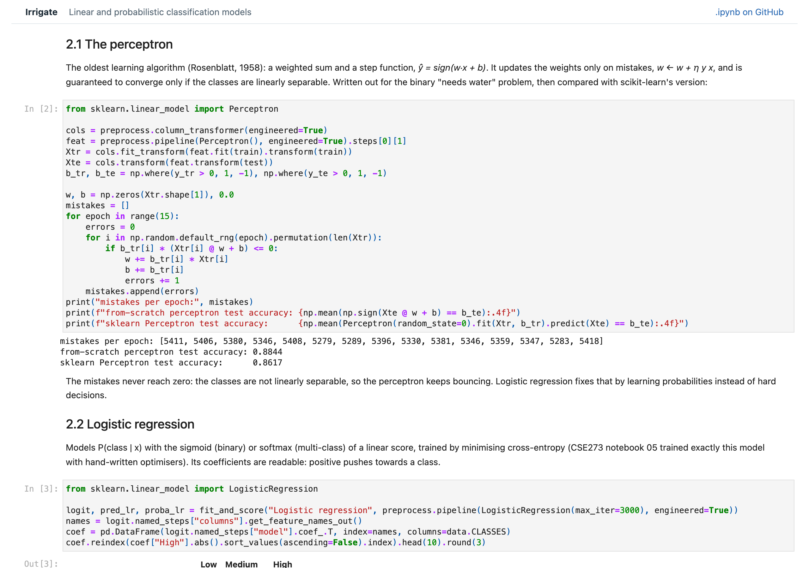
Fig. 2 · Notebook 03, the perceptron written from scratch and compared with scikit-learn's.
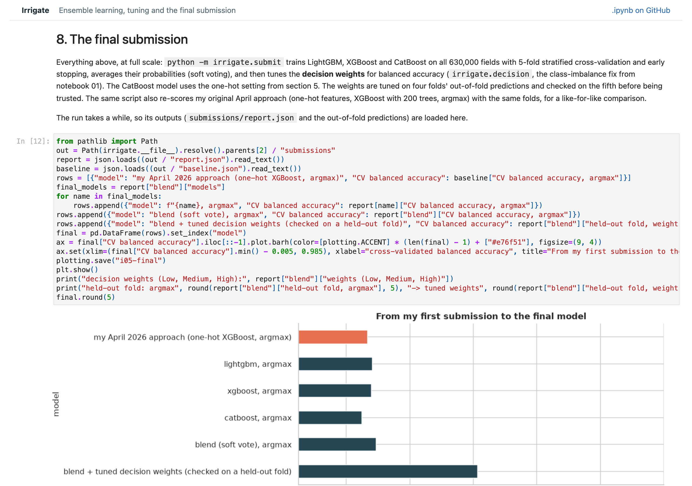
Fig. 3 · Notebook 05, the final model: loading the training script's report and comparing it with the April approach.
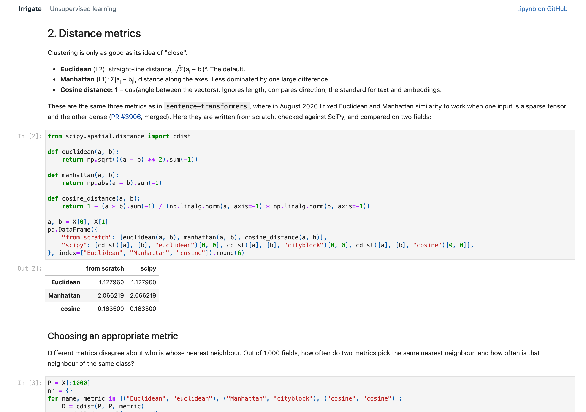
Fig. 4 · Notebook 06, distance metrics written from scratch and checked against SciPy.
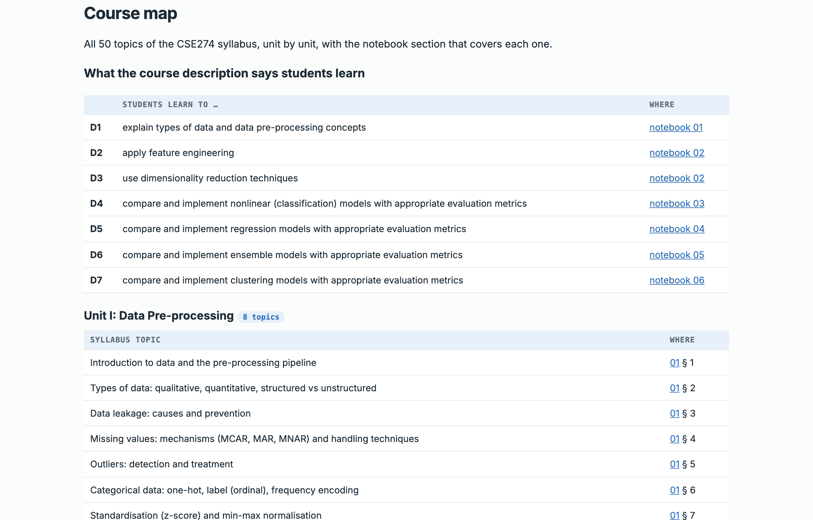
Fig. 5 · The course map on the site, with the course-description statements and every topic linked to its section.
03 · Unit I
Data pre-processing
Unit I: the pre-processing pipeline, types of data, data leakage, missing values and their mechanisms, outliers, categorical encoding, scaling and normalisation, and class imbalance. The competition data is clean (no missing values or outliers), so where a technique needs a problem to fix, the problem is injected into a copy and the fix is scored against the known truth. Notebook 01
Data leakage, demonstrated twice
Experiment
Honest
Leaky
Target leakage: a "water scheduled" column computed from the label
0.606
0.924
Selecting 20 of 2,000 pure-noise features on all rows before cross-validation (chance = 0.333)
0.330
0.490
Both leaky scores look like real signal, and both would collapse in production. The prevention is the same in both cases: split first, and put every fitted step inside the pipeline.
Missing values
20% of soil-moisture readings were removed under each mechanism. Under MCAR and MAR the remaining mean stays close to the truth (37.21 and 37.40, against 37.27); under MNAR (probes failing in dry soil) it drifts to 41.23, and nothing in the remaining data reveals it. Mean, median, k-NN and iterative imputation all reach a similar RMSE (about 16.4 under MCAR), because moisture is independent of the other features, and all are worse under MNAR (about 22). Adding a missing-value indicator lets the model use the fact that a reading is missing: 0.9089 → 0.9124 balanced accuracy.
Outliers
Detector
Broken probe
Fahrenheit
Impossible combination
False alarms
IQR rule
20 / 20
19 / 20
0 / 20
0
|z| > 3
20 / 20
20 / 20
0 / 20
0
Isolation Forest
0 / 20
0 / 20
1 / 20
59
Local Outlier Factor
20 / 20
20 / 20
3 / 20
17
Isolation Forest fails here for a reason worth knowing: each split uses a random feature, so with 11 flat, uniform-looking features a fault in one column is rarely isolated, while ordinary fields at the edges of the ranges are isolated just as quickly. "99% humidity with 2 mm of rain" defeats every detector, because each value is normal on its own; a domain rule would catch all of them.
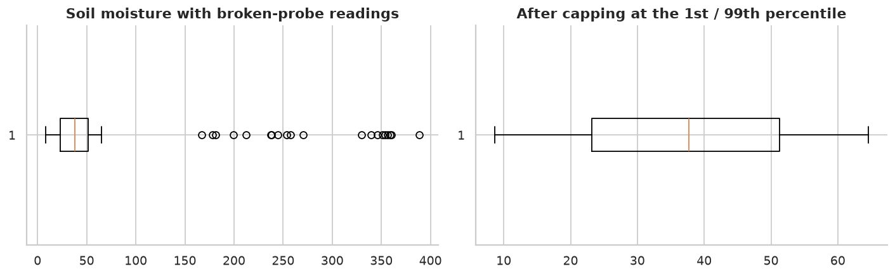
Fig. 6 · Treatment by capping at the 1st and 99th percentiles of the clean data.
With a tree model, one-hot (0.9494), ordinal codes (0.9492) and frequency encoding (0.9480) work almost equally well. Frequency is slightly behind because every crop covers about a sixth of the fields. Scaling doesn't matter to a tree (0.9438 every time) but matters to k-NN, and not in the obvious direction. Standardising gives 0.632 and no scaling 0.570, but min-max gives only 0.494: it squeezes the numeric features into the same [0, 1] range as the 35 mostly irrelevant one-hot columns.
Class imbalance
Fig. 8 · Imbalance fixes, by class. Every fix trades some Low and Medium recall for High recall. Threshold moving gives the best balanced accuracy (0.9571, against 0.9499 for plain argmax) and is the fix used in the final model.
04 · Unit II
Feature engineering and dimensionality reduction
Unit II: filter, wrapper and embedded feature selection; feature extraction, creating new features and aggregation features; the curse of dimensionality; PCA and LDA. Notebook 02
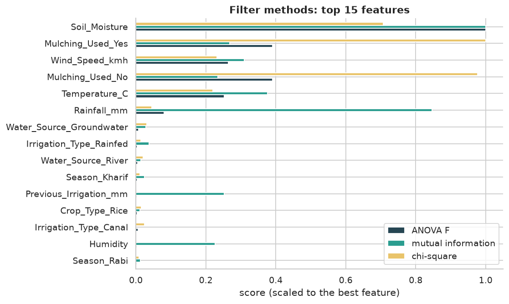
Fig. 9 · Filter methods: ANOVA F, mutual information and χ² agree on moisture, mulching, wind, temperature and rainfall.
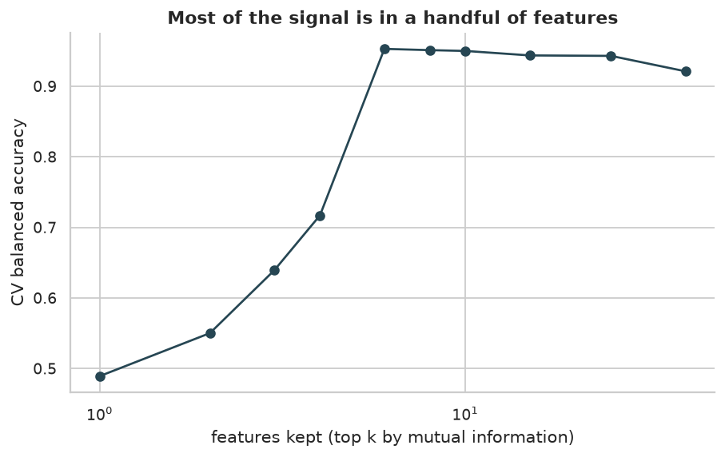
Fig. 10 · How many features? The top 6 give the best score (0.953); all 40 give 0.921.
The filters miss one important feature, growth stage. Its code runs from Sowing (0) to Harvest (3), but only the middle two stages need water, so a one-feature-at-a-time score underrates it. The random forest ranks it second (impurity importance 0.25; permutation importance 0.28). RFE and forward selection pick similar sets of 8, and an L1 penalty keeps 34 of 40.
Creating features
Features
Logistic regression
Gradient boosting
raw
0.6268
0.9511
+ domain features
0.8054
0.9529
+ domain + aggregation
0.8055
0.9561
The domain features (dryness, evaporation drive, thirsty stage, no mulch and their product, low rain) lift the linear model by 18 points, because they give it the interactions it cannot build on its own. Gradient boosting gains less, because its splits already find interactions. The lesson: feature engineering matters most for simple models. Mean dryness rises from 0.67 (Low) to 1.31 (Medium) to 2.24 (High).
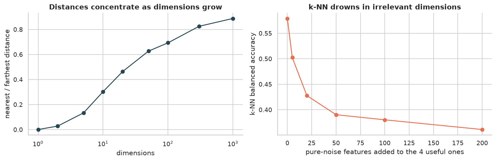
Fig. 11 · Curse of dimensionality: distances concentrate as dimensions grow, and k-NN drowns in noise columns.
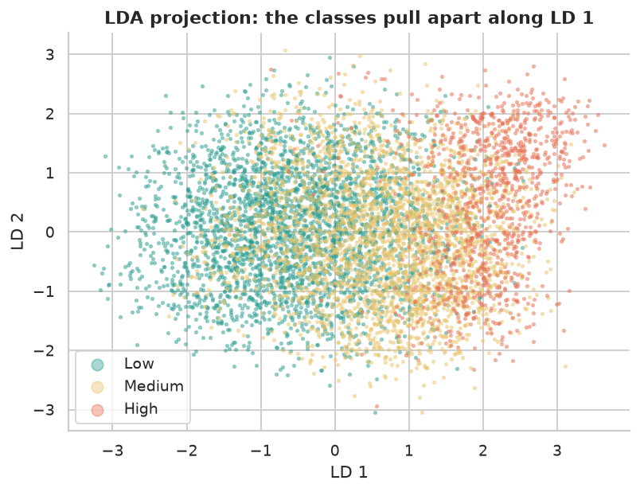
Fig. 12 · LDA projection. LD 1 is −0.93·moisture + 0.51·wind + 0.50·temperature: the dryness direction, found automatically.
PCA can't compress this data: every component explains about 1/11 of the variance, because the features are independent. LDA's two components beat all 11 raw features as input to k-NN (0.560 against 0.509), and PCA's two lose (0.483), because PCA never looks at the labels.
05 · Unit III
Linear and probabilistic classification models
Unit III: supervised learning, the perceptron and logistic regression, Naive Bayes, k-nearest neighbours, decision trees, support vector machines, and evaluation with the confusion matrix, precision, recall, F1, ROC and precision–recall curves. Every model uses the same 40,000 training fields and 20,000 test fields. Notebook 03
The perceptron, written from scratch for the binary "needs water" task, never stops making mistakes (about 5,300 per epoch): the classes are not linearly separable. It still reaches 88.4% test accuracy, against 86.2% for scikit-learn's version. Logistic regression's coefficients read like the EDA: for High, −3.13 on moisture, +2.07 on thirsty stage and +1.37 on temperature. Naive Bayes learned High fields as about 1.2 SD drier and 0.9 SD hotter than average.
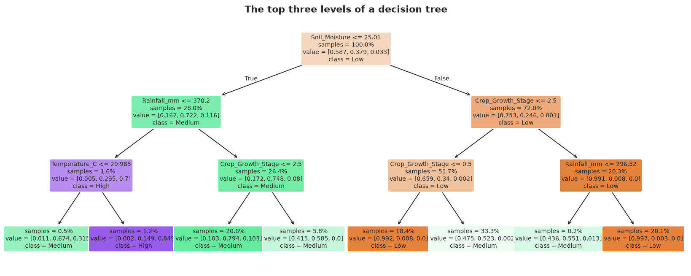
Fig. 13 · The top of a decision tree. Its first questions are the EDA findings: soil moisture ≤ 25%, then rainfall and growth stage, then temperature above 30 °C.
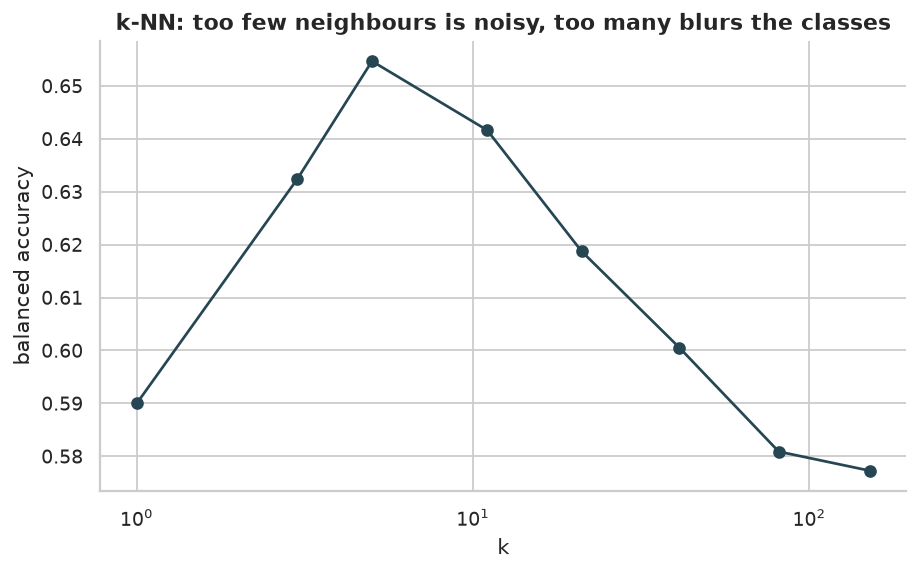
Fig. 14 · k-NN: balanced accuracy against k.
Model (same split)
Balanced accuracy
High recall
ROC AUC
Train time
Decision tree (depth 10)
0.9595
0.912
0.992
0.7 s
RBF SVM (12,000 fields)
0.8600
0.718
0.985
19.4 s
Gaussian Naive Bayes
0.8259
0.820
0.953
0.2 s
Logistic regression
0.8179
0.672
0.973
1.0 s
k-NN (k = 5)
0.6686
0.361
0.898
0.1 s
Linear SVM (12,000 fields)
0.6370
0.129
n/a
0.2 s
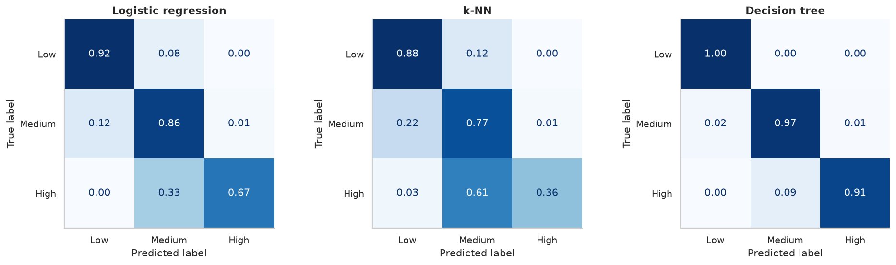
Fig. 15 · Confusion matrices of three models, normalised by the true class.Fig. 16 · ROC and precision–recall curves of the decision tree; the dotted lines are the no-skill baselines.
The tree wins because its axis-aligned splits fit the thresholds in the data. Its High recall (0.91) and precision (0.94) are what the ensembles in Unit V build on.
06 · Unit IV
Regression
Unit IV: regression vs classification, bias and variance, simple and multiple linear regression, interpreting coefficients, polynomial features, Ridge, Lasso and Elastic Net, the effect of regularisation, tree-based regression and time-series regression. The irrigation target is a class, so this unit uses the second Kaggle dataset: crop yields. Notebook 04
Regression vs classification. Treating Low / Medium / High as 0 / 1 / 2 and rounding a regressor's output scores 0.954, slightly above the classifier's 0.945. Regression uses the order of the classes, and rounding at 0.5 and 1.5 happens to place the boundaries in a way that suits balanced accuracy. That foreshadows the decision-weight tuning in Unit V.
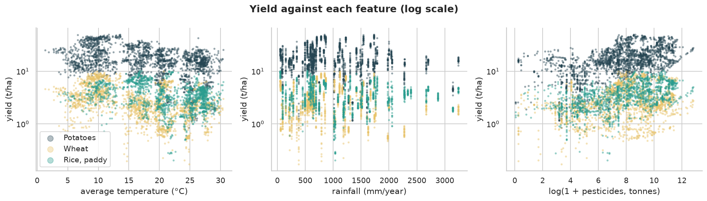
Fig. 17 · Crop yields against temperature, rainfall and pesticide use (log scale).
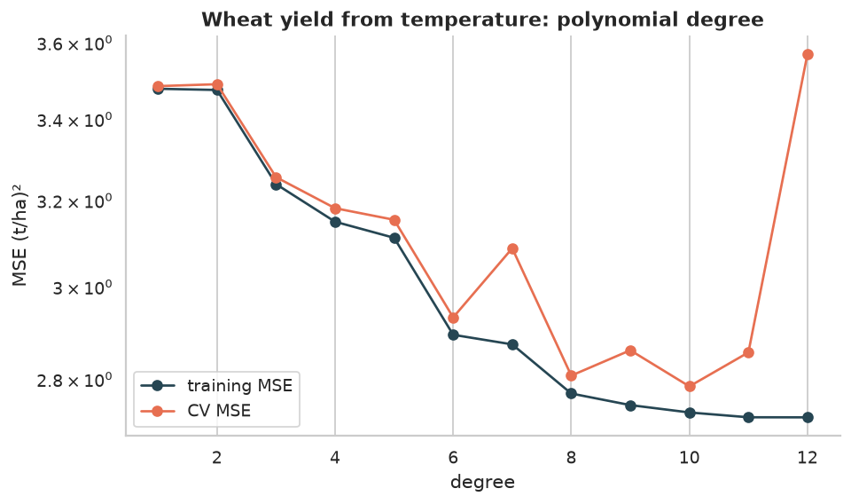
Fig. 18 · Bias and variance: polynomial degree for wheat yield; cross-validated error rises sharply at degree 12.
Linear models and their coefficients
For wheat, simple linear regression gives yield = 5.215 − 0.130 × temperature (R² = 0.19), identical by hand and in statsmodels. Multiple regression on log-yield with rain, temperature, log pesticides and crop explains R² = 0.683. Each extra degree goes with 2.3% less yield, holding the rest fixed. Pesticide use goes with more yield (+11.7% per unit of log pesticides), which is an association with intensive farming, not a dose effect. Adding temperature² implies an optimum average temperature of 24 °C and lowers the AIC from 25,385 to 25,194.
Fig. 19 · Regularisation. Ridge and Lasso coefficient paths on 43 expanded features, and cross-validated R² on countries never seen in training.
Model (CV by country)
CV R²
Non-zero coefficients
OLS, no penalty
0.644
43
Ridge, λ = 10
0.646
43
Lasso, λ = 0.005
0.684
32
Elastic Net
0.674
33
Tree-based regression gave a result that goes against the usual expectation. On unseen countries, linear regression with crop dummies (R² 0.673) beats gradient boosting (0.657), random forest (0.630) and a single tree (0.615). Trees predict averages of training boxes, so they can't extrapolate to a country outside what they saw. What you validate on decides what "best" means.
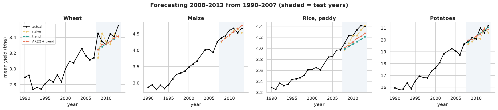
Fig. 20 · Time-series regression: forecasting 2008–2013 from 1990–2007. Mean MAE: trend 0.145, trend + AR(2) 0.154, naive 0.186 t/ha.
07 · Unit V
Ensemble learning and the final model
Unit V: why ensembles work, majority voting, bagging and random forests, AdaBoost and gradient boosting, XGBoost, LightGBM and CatBoost, ensemble regression, and model evaluation and tuning: cross-validation strategies, pipelines and hyperparameter search. The unit ends with the final Kaggle submission. Notebook 05
Bias, variance and voting
25 deep trees, each trained on a bootstrap sample, score 0.938 ± 0.003 on their own, and their majority vote scores 0.959: averaging removes variance. Voting across different models works only if they are comparably good. Here the tree (0.960) is far ahead of logistic regression, Naive Bayes and k-NN, so hard voting (0.799) and soft voting (0.885) both drag it down.
Bagged deep trees
1
5
10
25
50
100
Test balanced accuracy
0.939
0.953
0.954
0.960
0.960
0.960
Out-of-bag accuracy
–
–
0.973
0.980
0.982
0.982
Fig. 21 · Decision surfaces with DecisionBoundaryDisplay, the tool my merged scikit-learn pull request #34556 (July 2026) brought into scikit-learn's own random-forest example. A single tree's surface has small islands (variance); the forest and the boosted models smooth them.
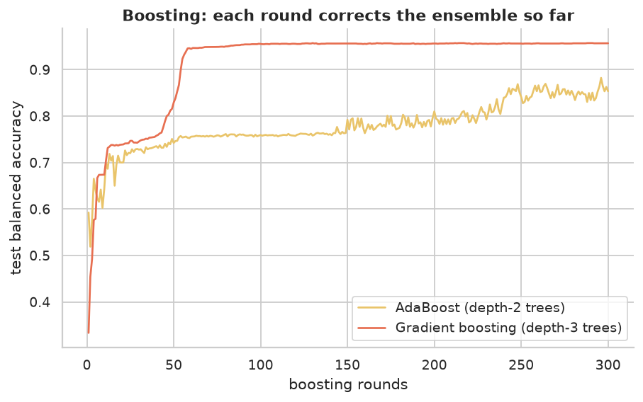
Fig. 22 · Boosting round by round: AdaBoost with depth-2 trees and gradient boosting with depth-3 trees.
The three libraries (40,000 fields)
Library
Balanced acc.
High recall
Seconds
CatBoost
0.9604
0.915
3.8
XGBoost
0.9583
0.909
4.7
LightGBM
0.9580
0.907
18.1
All three are within 0.003 of each other and, with default settings on 40,000 fields, no better than notebook 03's single tree (0.9595). Their value shows at scale: all 630,000 rows, early stopping and blending.
Evaluation and tuning
Cross-validation strategy matters. In 10-fold plain k-fold on 3,000 fields, the share of High fields per fold swings from 2.0% to 5.0%; stratified k-fold keeps every fold at 3.33%. Pipelines make every fitted step part of the model, so cross-validation refits all of them. Tuning on the same LightGBM pipeline: grid search (18 combinations) found the best score, 0.9520 in 236 s; random search reached 0.9518 in 380 s; successive halving (54 candidates) reached 0.9474 in 780 s, because its early rounds rank candidates on only 2,000 fields. Ensemble regression on the crop-yield data doesn't overturn notebook 04: on unseen countries Ridge (0.673) still beats every ensemble, and the voting regressor scores 0.662.
The final submission
python -m irrigate.submit trains LightGBM, XGBoost and CatBoost on all 630,000 fields with 5-fold stratified cross-validation and early stopping, averages their probabilities (soft voting), and tunes per-class decision weights for balanced accuracy. The weights are tuned on four folds' out-of-fold predictions and checked on the fifth. The same script re-scores my April approach with the same folds.
Model (5-fold CV on 630,000 fields)
Balanced accuracy
April 2026 approach: one-hot XGBoost, 200 trees, argmax
0.96169
LightGBM, argmax (867–981 trees per fold)
0.96206
XGBoost, argmax (827–935 trees)
0.96199
CatBoost, argmax (2,452–2,996 trees)
0.96124
Blend of all three, argmax
0.96236
Blend + decision weights (1, 0.52, 8.4), on the held-out fold
0.97033
Fig. 23 · From the April approach to the final model, cross-validated.
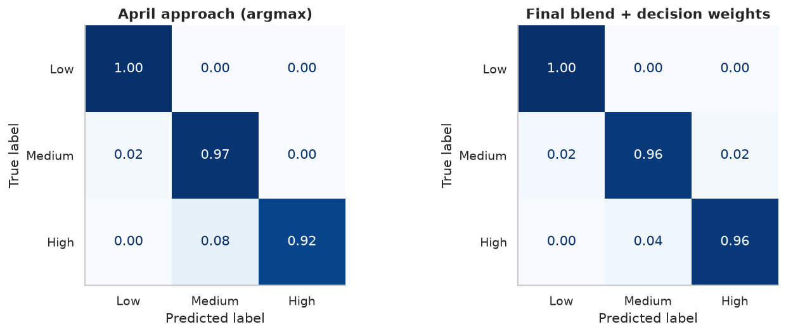
Fig. 24 · Where the gain comes from. High recall rises from 0.916 to 0.962; truly High fields called Medium fall from 8.4% to 3.8%, at the cost of Medium fields called High rising from 0.3% to 2.0%.
The ensembles alone add only 0.0007 over the April model with argmax. Most of the improvement comes from choosing the decision rule to match the metric: tuning the same weights on my April model's own predictions already reaches 0.9689 on the held-out fold. The better features and models add the rest, up to 0.9703. On Kaggle's hidden labels the final model scores 0.96985 public and 0.97126 private, against 0.96021 and 0.96077 in April (chapter 01).
08 · Unit VI
Unsupervised learning
Unit VI: the role of unsupervised learning, distance metrics, K-Means and K-Medoids, hierarchical clustering, DBSCAN, anomaly detection, and evaluating clusters. The labels are put aside. Notebook 06
Distances. Euclidean, Manhattan and cosine distance are written from scratch and match SciPy to six decimals. These are the same metrics as in sentence-transformers, where my pull request #3906 (merged, August 2026) made Euclidean and Manhattan similarity work with mixed sparse and dense inputs. On 1,000 fields, Euclidean and Manhattan pick the same nearest neighbour 80% of the time, and cosine only 48%.
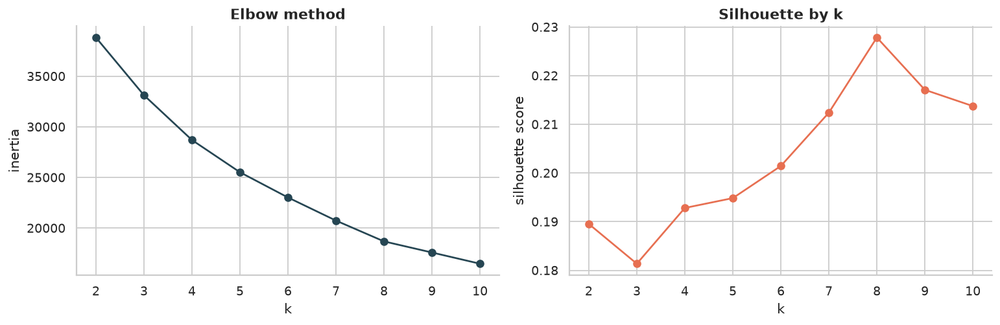
Fig. 25 · Choosing k: no sharp elbow or silhouette peak; the features are flat and independent.
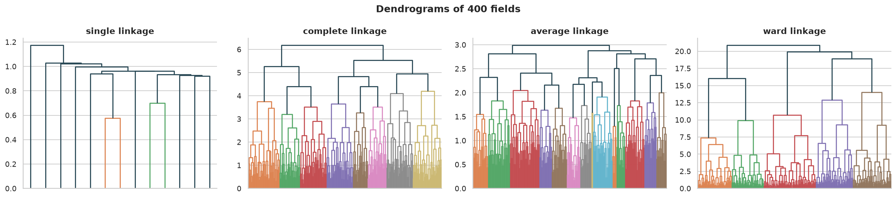
Fig. 26 · Dendrograms with four linkage criteria. Cut into four, single linkage gives one cluster of 397 and three singletons; Ward gives 111, 111, 90 and 88.
K-Means, written from scratch, reaches an inertia of 29,068 in 74 iterations from one start; scikit-learn's best of 10 starts reaches 28,706. The four segments it finds without labels differ strongly in need: the dry, windy segment is 12.4% High, the cool, calm one 0.0%. K-Medoids (PAM), also from scratch, with Manhattan distance on data with 15 scattered extreme outliers, keeps all four centres on ordinary fields (largest coordinate 1.19), while K-Means' centres are dragged out to 15.75.
Fig. 27 · DBSCAN: core, border and noise points among the High fields; K-Means cuts straight across two moons, DBSCAN follows them.
Anomaly detector (50 injected faults)
ROC AUC
Precision at 50
Distance to nearest K-Means centre
0.987
0.66
Local Outlier Factor
0.994
0.64
Isolation Forest
0.891
0.12
An Isolation Forest also drove anomaly detection in the AI-Powered Process Performance Analyzer, a team project led by Mayank149 to which I contributed a refactor of its anomaly module.
Clustering (k = 4)
Inertia
Silhouette
Davies–Bouldin
ARI with labels
K-Means
11,920
0.194
1.537
0.078
Agglomerative, Ward
13,288
0.135
1.730
0.065
Agglomerative, single
19,951
0.054
0.632
0.001
Single linkage is the cautionary row. Its useless one-giant-cluster result gets the best Davies–Bouldin score, because a few far-away singletons look well separated, but its silhouette gives it away. Use more than one measure, and look at the cluster sizes.
09 · Syllabus mapping
Every topic of the syllabus
Generated from tools/syllabus.py, the same file that builds the course map on the website.
The course description
The course page has no numbered course outcomes. Its description says that students learn to:
Statement
Students learn to …
Where
D1
explain types of data and data pre-processing concepts
notebook 01
D2
apply feature engineering
notebook 02
D3
use dimensionality reduction techniques
notebook 02
D4
compare and implement nonlinear (classification) models with appropriate evaluation metrics
notebook 03
D5
compare and implement regression models with appropriate evaluation metrics
notebook 04
D6
compare and implement ensemble models with appropriate evaluation metrics
notebook 05
D7
compare and implement clustering models with appropriate evaluation metrics
notebook 06
Unit I: Data Pre-processing 8 topics
Notebook 01_preprocessing.ipynb · Data pre-processing
Syllabus topic
Where
Introduction to data and the pre-processing pipeline
01 § 1
Types of data: qualitative, quantitative, structured vs unstructured
01 § 2
Data leakage: causes and prevention
01 § 3
Missing values: mechanisms (MCAR, MAR, MNAR) and handling techniques
01 § 4
Outliers: detection and treatment
01 § 5
Categorical data: one-hot, label (ordinal), frequency encoding
01 § 6
Standardisation (z-score) and min-max normalisation
01 § 7
Class imbalance: resampling, SMOTE, algorithmic approaches
01 § 8
Unit II: Feature Engineering and Dimensionality Reduction 8 topics
Notebook 02_features_dimensionality.ipynb · Feature engineering and dimensionality reduction
Syllabus topic
Where
Feature selection: filter methods
02 § 1A
Feature selection: wrapper methods
02 § 1B
Feature selection: embedded methods
02 § 1C
Feature extraction and creating new features
02 § 2A–2B
Aggregation features
02 § 2C
Curse of dimensionality; dimensionality reduction
02 § 3
Principal component analysis (PCA)
02 § 4A
Linear discriminant analysis (LDA); PCA vs LDA
02 § 4B
Unit III: Linear & Probabilistic Classification Models 9 topics
Notebook 03_classification.ipynb · Linear and probabilistic classification models
Syllabus topic
Where
Introduction to supervised learning
03 § 1
Perceptron (from scratch)
03 § 2.1
Logistic regression
03 § 2.2
Naïve Bayes classifier
03 § 3.1
K-nearest neighbours
03 § 4.1
Decision tree
03 § 4.2
Support vector machine (linear and RBF)
03 § 4.3
Confusion matrix and basic metrics
03 § 5.1–5.2
ROC and precision–recall curves
03 § 5.3
Unit IV: Regression 10 topics
Notebook 04_regression.ipynb · Regression
Syllabus topic
Where
Regression vs classification
04 § 1
Bias–variance considerations in regression
04 § 2
Simple linear regression
04 § 3
Multiple linear regression
04 § 4
Interpretation of coefficients
04 § 5
Polynomial feature expansion
04 § 6
Ridge, Lasso and Elastic Net
04 § 7
Effect of regularisation on model complexity
04 § 8
Tree-based regression models
04 § 9
Time-series regression models
04 § 10
Unit V: Ensemble Learning 8 topics
Notebook 05_ensembles_final_model.ipynb · Ensemble learning, tuning and the final submission
Syllabus topic
Where
Introduction; bias–variance trade-off in ensembles
features.py · lines 15–26def domain_features(df: pd.DataFrame, rain_cut: float) -> pd.DataFrame:
"""Row-wise features from agronomy. Apart from rain_cut (learned on training data)
they use one row at a time, so they can't leak."""
out = pd.DataFrame(index=df.index)
out["dryness"] = df["Temperature_C"] / df["Soil_Moisture"]
out["evaporation_drive"] = df["Temperature_C"] * df["Wind_Speed_kmh"]
out["water_supply"] = df["Rainfall_mm"] / 1000 + df["Previous_Irrigation_mm"] / 100
out["thirsty_stage"] = df["Crop_Growth_Stage"].isin(WATER_STAGES).astype(int)
out["no_mulch"] = (df["Mulching_Used"] == "No").astype(int)
out["exposed_thirsty"] = out["thirsty_stage"] * out["no_mulch"]
out["low_rain"] = (df["Rainfall_mm"] < rain_cut).astype(int)
return out
Each feature has an agronomic reason and comes from one row at a time, except the low-rain cut-off, which is a statistic of the data. If it were computed on all rows, validation rows would shape a training feature. So it is learned in DomainFeatures.fit(), on the training fold only, and passed in.
The test suite checks this directly: a test set with very wet fields keeps the cut-off from the training data.
features.py · lines 40–60class GroupStats(BaseEstimator, TransformerMixin):
"""Aggregation features: each field compared with the average field of its group
(e.g. its crop type), using means learned on the training data only."""
def __init__(self, groups=("Crop_Type", "Region"), columns=("Soil_Moisture", "Temperature_C")):
self.groups = groups
self.columns = columns
def fit(self, X, y=None):
self.means_ = {g: X.groupby(g)[list(self.columns)].mean() for g in self.groups}
self.global_ = X[list(self.columns)].mean()
return self
def transform(self, X):
X = X.copy()
for g in self.groups:
means = self.means_[g]
for c in self.columns:
group_mean = X[g].map(means[c]).astype(float).fillna(self.global_[c])
X[f"{c}_vs_{g}"] = X[c] - group_mean
return X
GroupStats follows the same contract: group means are learned in fit() and only looked up in transform(), with the global mean as a fallback for a group never seen in training.
One transformer, used in every notebook: one-hot for nominal columns (unknown categories ignored, not crashing), ordinal codes in the natural order for growth stage, and a choice of scaler for the numbers.
Decisions that match the metric
decision.py · lines 24–37def search_weights(proba, y, grid=None, rounds=3):
"""Coordinate search over per-class weights (the first class stays at 1)."""
grid = np.geomspace(0.2, 30, 80) if grid is None else grid
w = np.ones(proba.shape[1])
best = balanced_accuracy_score(y, decide(proba, w))
for _ in range(rounds):
for k in range(1, proba.shape[1]):
for g in grid:
trial = w.copy()
trial[k] = g
score = balanced_accuracy_score(y, decide(proba, trial))
if score > best:
best, w = score, trial
return w, best
Argmax maximises accuracy. Multiplying each class's probability by a weight before the argmax moves the decision boundaries; a coordinate search over the weights maximises balanced accuracy. For the final blend the weights are 1 for Low, 0.52 for Medium and 8.4 for High: High wins far more often than its probability alone would allow.
Tuned weights can overfit the predictions they are tuned on, so submit.py tunes them on four folds and scores them on the fifth before trusting them.
submit.py · lines 122–144def blend(models, oof, test_proba, y, fold_of, test, report, folds):
blend_oof = np.mean([oof[m] for m in models], axis=0)
blend_test = np.mean([test_proba[m] for m in models], axis=0)
# tune decision weights on folds 0-3, check them on fold 4, then refit on everything
dev, hold = fold_of != folds - 1, fold_of == folds - 1
w_dev, _ = decision.search_weights(blend_oof[dev], y[dev])
w_all, best_all = decision.search_weights(blend_oof, y)
report["blend"] = {
"models": list(models),
"CV balanced accuracy, argmax": balanced_accuracy_score(y, blend_oof.argmax(1)),
"held-out fold, argmax": balanced_accuracy_score(y[hold], blend_oof[hold].argmax(1)),
"held-out fold, weights tuned on the other folds": balanced_accuracy_score(y[hold], decision.decide(blend_oof[hold], w_dev)),
"weights (Low, Medium, High)": [round(float(v), 3) for v in w_all],
"CV balanced accuracy, tuned weights (in-sample)": best_all,
}
labels = np.array(data.CLASSES)[decision.decide(blend_test, w_all)]
sub = pd.DataFrame({"id": test["id"], data.TARGET: labels})
sub.to_csv(OUT / "submission.csv", index=False)
report["submission rows"] = len(sub)
report["submission class shares"] = sub[data.TARGET].value_counts(normalize=True).round(4).to_dict()
(OUT / "report.json").write_text(json.dumps(report, indent=2, default=float))
return report
Full-data training
submit.py · lines 60–71def fit_one(name, model, X_tr, y_tr, X_va, y_va):
if name == "lightgbm":
from lightgbm import early_stopping
model.fit(X_tr, y_tr, eval_set=[(X_va, y_va)], callbacks=[early_stopping(150, verbose=False)])
return model, model.best_iteration_
if name == "xgboost":
model.fit(X_tr, y_tr, eval_set=[(X_va, y_va)], verbose=False)
return model, model.best_iteration
cat_idx = [X_tr.columns.get_loc(c) for c in data.CATEGORICAL]
model.fit(X_tr.astype({c: str for c in data.CATEGORICAL}), y_tr, cat_features=cat_idx,
eval_set=(X_va.astype({c: str for c in data.CATEGORICAL}), y_va))
return model, model.get_best_iteration()
Each library gets early stopping on the validation fold (150 rounds without improvement), and categorical columns are handled natively: pandas categories for LightGBM and XGBoost, strings for CatBoost.
11 · Testing
What was checked
Unit tests of the package, checks inside the notebooks that compare from-scratch results with libraries, a full execution of every notebook, and the final test: Kaggle's hidden labels.
1. Unit tests (pytest)
Test
Checks
Result
test_irrigate.py
domain features learn cutoff on training data only
Pass
test_irrigate.py
group stats use training means
Pass
test_irrigate.py
frequency encoder
Pass
test_irrigate.py
pipeline runs end to end with engineered features
Pass
test_irrigate.py
weight search beats argmax on imbalanced probabilities
Pass
$ pytest -q..... [100%]
5 passed in 1.70s
2. Checks inside the notebooks and the script
What
Compared with
Result
From-scratch perceptron
scikit-learn Perceptron
0.884 vs 0.862 accuracy
Distance functions
SciPy cdist
equal to 6 decimals
K-Means from scratch
scikit-learn (10 starts)
29,068 vs 28,706 inertia
SLR closed form
statsmodels OLS
identical coefficients
Leakage demonstrations
the honest pipeline
0.924 vs 0.606; 0.490 vs 0.330
My April approach, re-scored with this project's CV
its real Kaggle scores
0.9617 vs 0.9602 / 0.9608
Decision weights tuned on folds 1–4
fold 5
0.9622 → 0.9703
Final model
Kaggle's hidden labels
0.96985 public, 0.97126 private
3. Notebook execution
Every notebook was executed top to bottom on a fresh kernel (Python 3.12, pandas 3.1, scikit-learn 1.9, LightGBM 4.7, XGBoost 3.4, CatBoost 1.2) with no errors. Reading every output against its text found and fixed several claims before publication:
LOF does not catch the impossible combinations (3 of 20).
Min-max scaling makes k-NN worse, not better.
Tree ensembles do not beat linear regression on unseen countries.
The rounded regressor beats the classifier.
Single linkage gets the best Davies–Bouldin score.
A K-Medoids demo whose "outliers" formed their own cluster had to be redesigned.
One problem found during the full-data run: CatBoost with its default categorical handling had finished only one of five folds after three and a half hours on a laptop CPU. The cause was its ordered target statistics, which are expensive and unnecessary for columns with at most 6 values. Setting one_hot_max_size=10 brought all five folds down to 18 minutes. The first submission without CatBoost (public 0.96849, private 0.97068) and the final one with it (0.96985, 0.97126) are both kept on Kaggle.
late submissions to Playground Series S6E4 on 24 October 2026; final: public 0.96985, private 0.97126
Reproduce
pip install -e ".[dev]", download both datasets, then pytest, python -m irrigate.submit --baseline and jupyter lab notebooks/
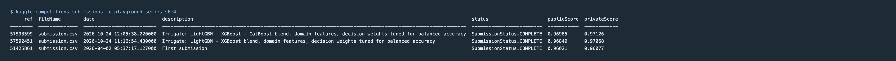
Fig. 28 · All three submissions on Kaggle, as the Kaggle API reports them (the scores are tabled in chapter 01).
What I learned
The metric decides the model. My first submission was a good classifier for the wrong objective. Matching the decision to balanced accuracy was worth more than any single model change.
Leakage is easy and invisible. Both leakage demonstrations produced convincing scores. Pipelines that refit everything per fold are the only reliable protection.
Clean data is a finding. No missing values, no outliers, independent features: knowing that told me which methods were worth using, and the injected-fault experiments showed what each method actually catches.
Feature engineering helps simple models most. +18 points for logistic regression, +0.5 for gradient boosting.
"Best" depends on how you validate. Validated by country, linear regression beat the tree ensembles; validated by time, a trend line beat autoregression.
Defaults have costs. CatBoost's default categorical handling made full-data training impractical on a laptop; understanding what it does (and that this data didn't need it) turned hours into minutes.
Possible extensions
Stacking: a small meta-model on the out-of-fold probabilities instead of a plain average.
Optuna search over the LightGBM parameters at full scale.